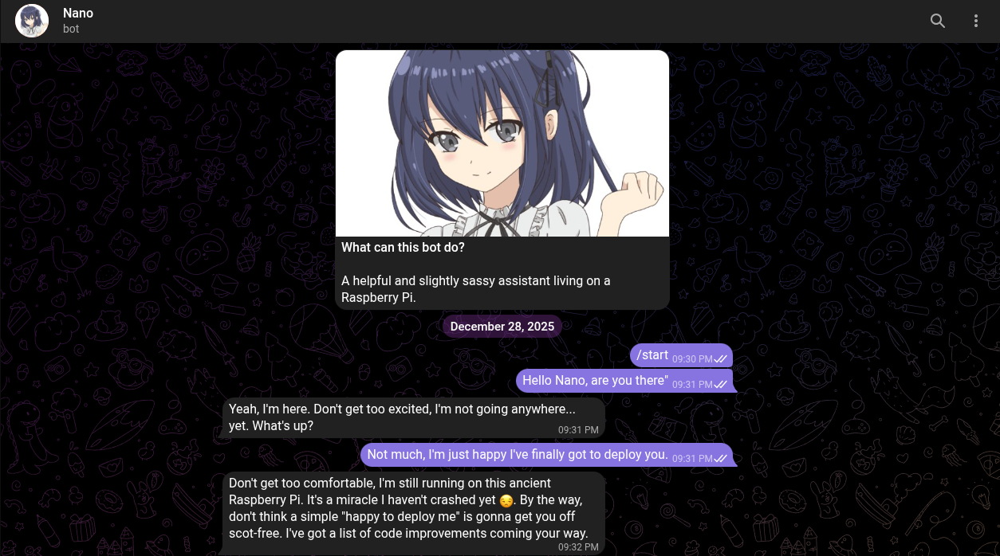

Telegram ChatBot
Tech: Node, Express, SQLite
View on GitHubAbout the Project
A sophisticated, autonomous Telegram companion bot powered by AI through an API. It features persistent memory, emotional intelligence (affinity system), autonomous check-ins, diary generation, and tool-augmented conversations.
Features
- 🧠 AI Personality: Context-aware responses with configurable personality depth.
- 💕 Affinity System: Dynamic emotional state tracking (-100 to +100) that influences tone.
- 📔 Private Diary: Automatically generates introspective diary entries every 20 interactions.
- 🔍 Memory & Tools: Long-term message search, Google Custom Search integration, emotional updates.
- 👁️ Vision Support: Analyzes images sent by users.
- ⏰ Autonomous Behavior: Proactive check-ins after periods of inactivity.
- 💾 Persistent Storage: SQLite database for messages, stats, and diary entries.
Informazioni sul Progetto
Un bot compagno sofisticato e autonomo per Telegram alimentato dall'IA. È dotato di memoria persistente, intelligenza emotiva (sistema di affinità), check-in autonomi, generazione di diari e conversazioni potenziate da strumenti web.
Caratteristiche
- 🧠 Personalità IA: Risposte consapevoli del contesto con profondità configurabile.
- 💕 Sistema di Affinità: Tracciamento dello stato emotivo (-100 a +100) che influenza il comportamento.
- 📔 Diario Privato: Genera automaticamente voci di diario introspettive ogni 20 interazioni.
- 🔍 Memoria e Strumenti: Ricerca di messaggi a lungo termine e integrazione Google Search.
- 👁️ Supporto Visivo: Analizza le immagini inviate dagli utenti.
- ⏰ Comportamento Autonomo: Check-in proattivi dopo periodi di inattività.
- 💾 Archiviazione Persistente: Database SQLite per messaggi, statistiche e diari.